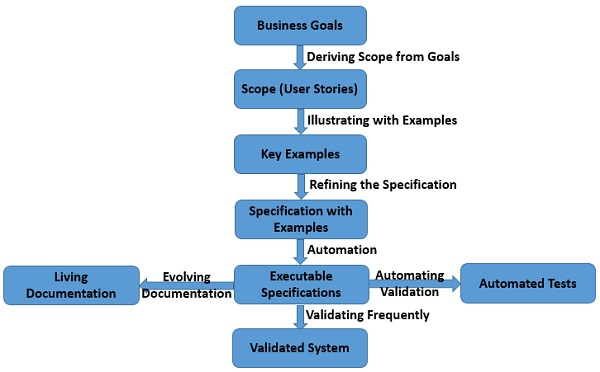

Mis on Specification by example?
Specification by Example (SBE) on tarkvaraarendusmeetod, mis ühendab ärinõuete määratlemise, testimise ja dokumenteerimise üheks protsessiks. Meetod keskendub funktsionaalsuse kirjeldamisele reaalsete näidete kaudu, mida kasutatakse automaatsete testide alusena.
SBE on koostöövõimeline lähenemine, kus arendajad, äripoole esindajad ja testijad töötavad koos, et luua ühine arusaam nõuetest. Näited kirjutatakse käitumispõhises vormingus, mis aitab määratleda ja kontrollida, kas arendatud funktsionaalsus vastab nõuetele.

Specification by example eelised ja puudused
Eelised:
- Parandab koostööd: Toetab arendajate, testijate ja äripoole tõhusat suhtlust.
- Selged nõuded: Näited aitavad vältida segadust ja mitmetimõistetavust.
- Automaatne dokumentatsioon: Näited toimivad ka elava dokumentatsioonina, mida uuendatakse koos arendustööga.
- Varajane vigade avastamine: Näidete põhjal loodud testid avastavad puudused enne arenduse hilisemaid faase.
Puudused:
- Algne ajainvesteering: Näidete loomine ja koostöö nõuab esialgu rohkem aega.
- Nõuab distsipliini: Edukas rakendamine eeldab tihedat koostööd ja järjepidevust.
- Kvaliteet sõltub näidetest: Halvasti koostatud näited võivad põhjustada ebatäpseid nõudeid või teste.
Näide vahendist: Cucumber
Cucumber on populaarne tööriist, mis toetab Specification by Example’i ja käitumispõhise arenduse (BDD) meetodeid.
- Gherkin: Cucumber kasutab Gherkinit, lihtsat keelt ärinõuete kirjeldamiseks konkreetsete näidetega.
- Integratsioon: Seda saab integreerida erinevate arenduskeskkondade ja testimisraamistikega.
- Automatiseerimine: Näited kirjutatakse automaatsete testide vormis, mis kontrollivad koodi vastavust nõuetele.